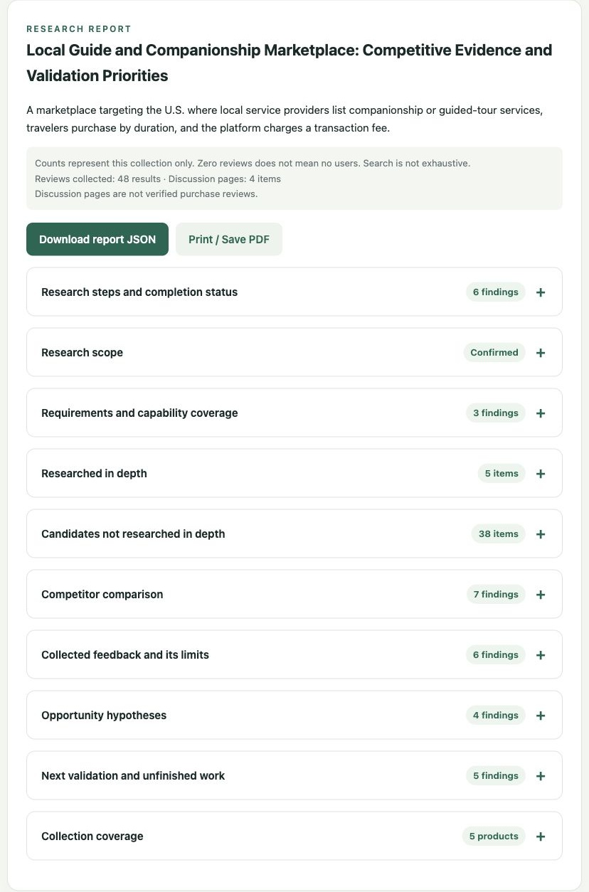

Explore the market
behind your idea.
IdeaProbe is an open-source AI market research tool for founders, indie developers and creators. Discover competing products, read available user reviews, and turn your idea into a report with traceable sources.
Run it locallyWatch the 45-second demoMIT license · Your own API keys · Chinese & English interface

Find related products
Search Bing RSS, Tavily and Brave in parallel. Expand keywords when discovery is sparse; rank candidates by function, audience and scenario.
Read real feedback
Discover App Store, Google Play and discussion sources. Keep actual reviews separate from discussions and product marketing.
Inspect sourced reports
Investigate up to 10 selected products. See other candidates with selection reasons, evidence links and collection coverage. Export JSON or print to PDF.
From a product idea to competitor research
- Describe your product idea and optional known competitors.
- Edit and confirm the AI interpretation and proposed search keywords.
- Set search, page, token and review limits, then start research.
- Review ranked competitors, available feedback, evidence-backed opportunities and suggested validation steps.
Understanding, keywords and extraction can use one provider while the final report uses another. Choose OpenAI, Anthropic Claude, Google Gemini or a compatible Chat Completions service.
Install and run locally
Requires Node.js 24+ and Python 3.9+. No database or Docker setup is required.
git clone https://github.com/pauline-zhang-star/IdeaProbe.git
cd IdeaProbe
python3 -m venv .venv
.venv/bin/python -m pip install -r requirements.txt
cp .env.example .env
# Set PYTHON_BIN=.venv/bin/python in .env
npm startOpen http://localhost:3210/ and configure your model provider and API key. Bing RSS is enabled without a search key; Tavily and Brave are optional. See the README for Windows instructions and configuration details.
What is IdeaProbe?
IdeaProbe is an MIT-licensed, open-source local web application for early product market research. Founders, indie developers and creators describe an idea, confirm requirements and search keywords, discover related products, analyze available reviews and discussions, and generate a report with source references. Users configure their own model and search API keys.
Product reference → · Read as Markdown
Content updated:
Frequently asked questions
What is IdeaProbe used for?
Early market research, competitor discovery and review analysis before building a product. It helps organize existing evidence into a sourced report; it does not prove demand or predict product success.
Is IdeaProbe free?
The software is available under the MIT license and runs locally. Model and search providers may charge you for API usage. There is no project subscription required for this local version.
Can I use Claude, Gemini or a different model?
Yes. Configure the provider, model ID and corresponding key separately for understanding/extraction and report generation. Custom endpoints must support OpenAI Chat Completions and JSON output.
Does it search open-source projects?
Web queries can discover GitHub repositories and other open-source tools. It currently uses web search sources rather than a dedicated GitHub Search API integration; coverage depends on the query and search provider.
What happens if there are no reviews?
Product information is retained. Missing feedback is shown in collection coverage, and the app does not invent reviews or turn marketing text into user feedback.
Where do my data and API keys go?
Tasks and keys are stored locally under .data/. Research content is sent to the model/search providers you choose; it is not sent to the project author. This public page contains only product documentation.